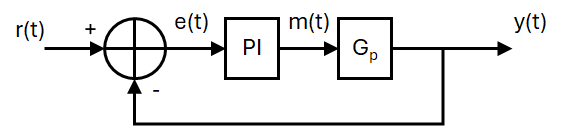
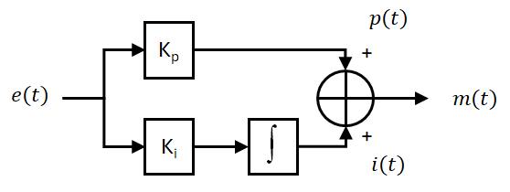

Controlling the Distance of the robot from a Target
GTA Marking
This is an assessed Exercise. When you have completed the
Before Continuing
Before starting these exercises, you should ensure that you have completed all the
Introduction
During this exercise you will write a program that will maintain a set distance between the robot chassis from a target. You will implement a closed loop control system with a PI controller, the IR sensor for distance feedback and a PWM actuation signal will be fed to the motor driver board.
The circuit requirements for this exercise is that of the
The following video is a quick demonstration of the final outcome from this exercise:
The PI Controller Algorithm
PI controllers theory is discussed elsewhere in your course notes from other modules, so will not be comprehensively covered in this section.
A proportional and integral, PI, controller can be used to control the behaviour of a system - in the case the position of the robot chassis. The Pi controller sits within a closed loop control system, as shown in the Block diagram, below:
{kind=link}

Where: \(R(t)\) is the reference signal, \(e(t)\) is the error signal, \(m(t)\) is the manipulated variable and \(y(t)\) is the system output, and \(Gp\) is the process dynamics of the robot chassis.
The structure of the PI controller is shown above, and can be represented with the following time domain equation:
A Block diagram of the above PI control algorithm is shown below:
{kind=link}

*Where: \(e(t)\) is the error, \(p(t)\) is the proportional term, \(i(t)\) is the integral term, and \(m(t)\) is the manipulated variable. \(K_p\) and \(K_i\) are the controller gains.
The PI controller algorithm, described in the above equation, cannot be directly implemented on the Arduino, instead, it must be discretized.
To achaive this, first we split the PI controller into the proportional, p(t), and integral, i(t), components, then discretize the components individually:
The proportional term: $ p(t)=K_p\,e(t)=K_p(r(t)-y(t)) $
This discretizes to: $ p[k]=K_p\,e[k]=K_p(r[k]-y[k]) $, where: \(k\) is the current time step.
The integral term: $i(t)=K_i\int_{-\infty}^\infty e(t)\,dt \space\space \Longleftrightarrow \space\space \frac{di(t)}{dt}=K_i\,e(t) $
We can use a Backward difference method, to discretize the derivitive function:
Where: \(\Delta T\) is the sample period for the controller.
Finally, the manipulated variable, \(m[k]\), can be found: $$ m[k]=p[k] + i[k] $$
Note
The integral term is susceptible to a process called integral wind-up
if i > 255 {
i = 255;
}
else if (i < -255) {
i = -255;
}
i is the current integral term, \(i[k]\).
The integral controller can be implemented in function, to improve readability of your main loop, as illustrated in the following example code:
int piControllerfunction(float contrKp, float contrKi,
float contrRef, float contrFB, float deltaT){
// Calculate the control error
contrError = contrRef - contrFB;
// Calculate the proportional term
float p = contrError * contrKp
// Calculate the integral term
float i = iPrev + (contrError * contrKi * deltaT)
// Bound the integral term to 255
if i > 255 {
i = 255;
}
else if (i < -255) {
i = -255;
}
// calculate the manipulated variable
float m = p + i
// Bound the manipulated variable to 255
if m > 255 {
m = 255;
}
else if (m < -255) {
m = -255;
}
// Save the integral term for the next iteration
iPrev = i;
// Recast the manipulated variable and return its value
return (int)m;
}
Notes for the above code
The above code is a function and should be called periodically from the main() function. On the prototype we used a control sample period of 10ms.
The variable iPrev must be declared and initialised in the global variable space, i.e.: float iPrev = 0;.
The variables contrKp, contrKi, contrRef, contrFB and deltaT must be passed to the function call as floating point variables.
A Note on Code Timing and Determinacy for Embedded Systems
When implementing a PI controller on an embedded system, it is important to maintain strict timing of the algorithm, to ensure that you are reading the inputs and sensors, and processing the controller algorithm at known times, normally at specific time intervals. Maintaining strict and consistent timing for these ensures that the algorithms you are using function as expected and produce predictable behaviour.
Using delay() functions within your code often leads to code that does not have consistent timing, and it is often difficult to predict the code execution time for sections of code.
To maintain more consistent timing in your code, you should use the millisecond tick timer function, millis(), to provide a timing source for your code execution, similar to that used in the loop().
Assessed Exercise
During this exercise you will write a program that will maintain a set distance between the robot chassis from a target. You will implement a closed loop control system with a PI controller, the IR sensor for distance feedback and a PWM actuation signal will be fed to the motor driver board.
Procedure:
- Ensure that you have the completed the building of the robot chassis and the electronic circuit, as described in the
Building the Robot Chassis document. -
A good starting point for the code for this exercise is the assessed exercise you completed for the
Motor and Encoder section -
The lolly stick should be rained to the vertical position at the start of the exercise demonstration.
- Write a program that maintains the robot chassis 30cm from a target, (the kit box stood up on its end works well for this):
- Uses the IR sensor to measure the distance to the target
- The robot chassis should be actuated using the yellow gear motor, with wheel attached, and driven from the driver board.
- A PI controller must be used to control the system in closed loop, with the output of the PI controller providing the PWM signal, and setting the BI1 and BI2 inputs to the driver board.
- The following controller gains should be used:
- \(K_p = -10\)
- \(K_i = -20\)
- Ensure the code you write does not use the
delay()function to control timing in the main function,loop(), instead use the millisecond tick timer function,millis(), to provide a timing source for your code execution.- On the prototype we used a control sample period of 10ms.
Note
The \(K_p\) and \(K_i\) values are negative because of the negative slope of the IR sensor response.
The controller values have been selected to show a slight overshoot when the target is moved, if used with a control sample period of 10ms.
What do we expect to see in the demonstration?
- At the start of the demonstration, your robot chassis should be placed approximately 30cm from the target, (the kit box stood up on its end works well for this).
- On resetting the Arduino, your lolly stick should go to the horizontal position, if it is not already there.
- After a one-second delay, the lolly stick assembly should raise to the vertical position.
- After a further one-second delay, the robot chassis should start to track the position of the target.
- You must show that you have implemented the position control using a PI controller.
Now Get Your Work Marked by a GTA
Once you have completed your code and are satisfied with its operation, you should show your work to a GTA for marking.